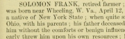

Profile of Solomon Frank (b. 1817) from historical Darke county (Ohio) book in 1880
 Profile of Solomon Frank (b. 1817 to Stephen Frank near Wheeling) from historical Darke county (Ohio) book in 1880.
Citation
"Solomon Frank," The history of Darke county, Ohio. 1880 (W. H. Beers & Co. Chicago, IL), pages 571-572, accessed on the Internet Archive at https://archive.org/stream/historyofdarkeco00beer#page/571/mode/1up.
Transcript of Profile [lists and emphasis added]
SOLOMON FRANK, retired farmer; P. O. German [township], Ohio.
- This gentleman was born near Wheeling, W. Va. [West Virginia], April 12, 1817, and is the son of Stephen Frank, a native of New York State;
- when quite small, he emigrated to Montgomery Co., Ohio, with his parents;
- his father deceased when he was a small boy, thus leaving him without the comforts or benign influences of a parental home;
- this misfortune early threw him upon his own resources; he engaged at the occupation of farming, hiring out, until he was 18;
- at this age [around 1835], he began the coopering business, which occupation he followed for upward of twenty years.
- In 1840, he came to this township [German] and located in the town of Palestine, where he pursued his usual vocation.
- He has been married twice; his marriage with Miss Acca Parent was celebrated Dec. 15, 1842; her parents were early settlers of this township; and their biographies occur under the sketch of I. D. Parent. Mr. Frank and family, together with a large circle of acquaintances, were called upon to mourn her death, which occurred March 29, 1861; she was for many years identified with the cause of religion, being first a member of the M. E. Church, and, at her death, of the U. B. Church; her life was an exemplary one, and her death a loss which the church and community both felt.
- Mr. Frank was united in marriage the second time, Feb. 16, 1862, with Mrs. Sarah A. (Crisler) Leas; she is a native of Preble Co., Ohio.
- Six children were born to the first union, one of whom deceased when quite small; the rest are all living; one child was the fruit of the last union, which died in infancy.
- Mr. Frank has devoted his latter years to farming and superintending his farm.
- Mr. and Mrs. F. are both active members of the U. B. Church of Pleasant Grove, and are leading exemplary lives.